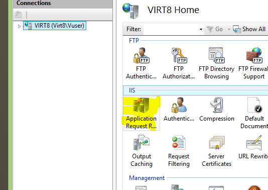
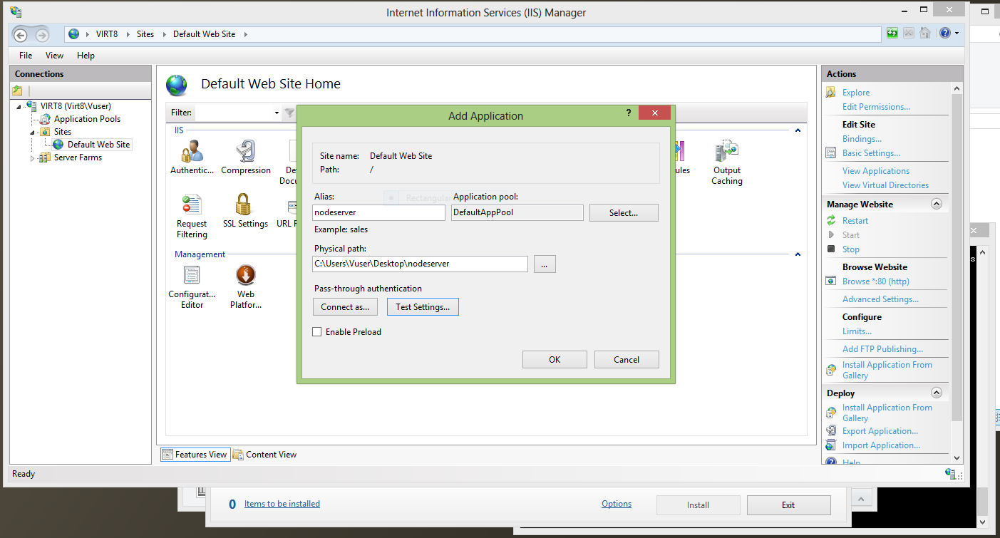
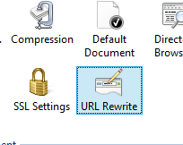
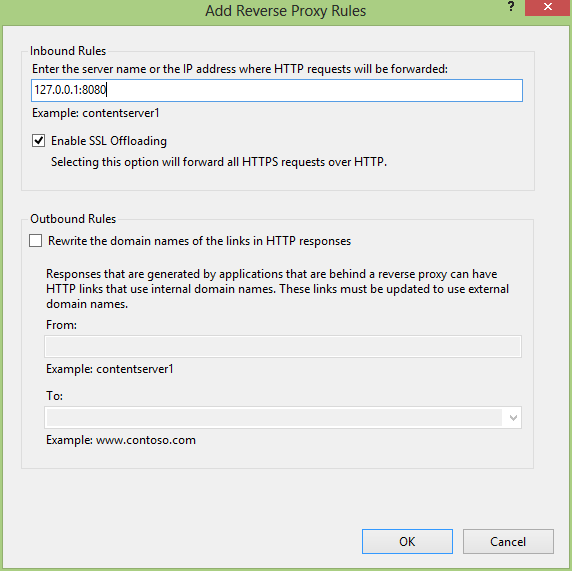
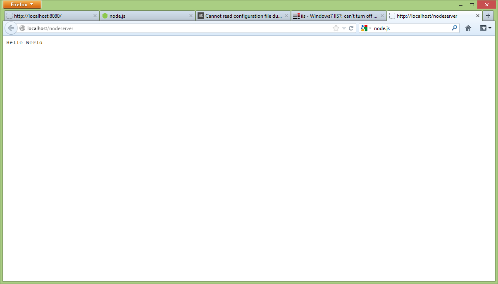

Running Node.js Alongside IIS on Windows
Using Reverse Proxy
2013-02-15 Updated 2025-12-31 · 1f8c246So you want to run a node server as a production server on windows, but IIS is running on the machine and taking up port 80. You have probably heard of IISNode, and while it seems to work well, I was not happy with the idea of having to use XML to configure it and not being able to have any flexibility over which ports I use.
My solution was to set up IIS as a reverse proxy to a node process. This way I get load balancing, scaling etc and I am not bound to doing it the IIS way.
Step 1
First download ARR (Application Request Routing) and URL Rewrite for IIS.
Once you have these installed, open IIS and go into Application Request Routing in Server Proxy Settings and check Enable Proxy.

Step 2
Create an application on your Default Website that points to an empty directory. This directory will house the config file.

Step 3
Open URL Rewrite and select Add Rules, then add a Reverse Proxy.

Step 4
Enter the address and port where the node process is running, in this example I used 127.0.0.1 and the port 8080.


Running Node as a Service
You probably don't want to just run the node process in a terminal and leave it, so I recommend using Winser in order to run node as a Windows service.
Troubleshooting
I had some issues with permissions on the folder. Something was causing the browser to just hang. I moved the application to a different application pool. At this point I'm not sure if it was specifically the pool or if I had also changed some permissions at the same time, but the problem went away.
Originally posted on Blogspot